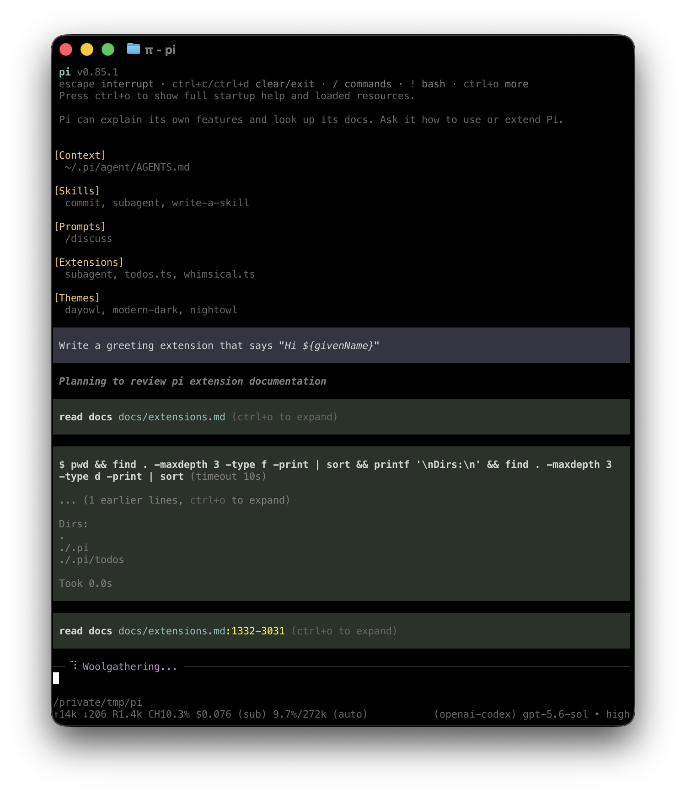

AI NEWS ISSUE 05
AI는 일을 이어가고,
기업의 일상으로 들어간다
멈춰도 이어 하는 에이전트, 은행의 이메일을 분류하는 Claude,
원하는 부분을 고치는 FLUX. AI에게 일을 반복해서 맡길 조건이 구체화됩니다.
AT A GLANCE
30초 요약
- Pi Durable 저장한 작업 기록으로 중단 이후를 이어 가는 실험 단계의 개발 도구가 나왔습니다.
- Barclays Claude를 활용한 이메일 분류와 직원 지식 검색이 실제 은행 업무에서 운영되고 있습니다.
- FLUX 3 Image 이미지 속 요소의 위치를 상자로 지정하고 부분 수정을 요청할 수 있습니다.
- OpenAI 에이전트 활동과 관련해 100곳 넘게 통보했다고 밝혔습니다. 통보 건수는 침해 확정 건수가 아닙니다.
2026년 10월 3일 기준으로 공식 발표·개발 문서·후속 조사를 확인했습니다. 발표일은 원문 표기 기준입니다. 기업이 발표한 기능과 수치, 조사 중인 사실, 우리의 해석을 구분합니다. 아래 도식의 업무 예시는 설명용이며 제품 성능을 직접 시험한 결과가 아닙니다.
AI에게 상품 100개의 정보를 점검해 달라고 부탁했다고 생각해 봅시다. 50번째 상품을 읽다가 프로그램이 꺼졌습니다. 다시 켜면 처음부터 해야 할까요? 이미 끝낸 일은 어떻게 구분할까요? 점검하던 AI가 상품 정보를 직접 바꿔도 될까요?
AI가 업무에 들어오면 이런 질문이 생깁니다. 10월 초의 소식은 AI가 무엇을 할 수 있는지에서, 그 일을 어떻게 계속 맡길 수 있는지로 관심이 넓어지고 있음을 보여줍니다.
01 / PI DURABLE
프로그램이 꺼져도,
하던 일을 기억한다면
Earendil은 10월 1일 Pi 1.0과 Pi Durable을 함께 공개했습니다. Pi는 터미널에서 파일을 읽고 코드를 고치는 AI 코딩 도구입니다. 여러 모델과 도구를 연결할 수 있고, 사용자가 필요한 기능을 붙이는 데 초점을 맞춥니다. 두 프로젝트 모두 MIT 라이선스로 공개됐습니다. 공식 발표 ↗

함께 나온 Pi Durable의 관심사는 조금 다릅니다. 오래 걸리는 작업을 저장하고, 중단되면 다시 이어 갈 실행 기반입니다. 문서의 자동 저장과 비슷하지만, 글뿐 아니라 AI의 대화와 도구 실행 상태도 다룹니다. 아직 실험 단계이며 기존 Pi를 대체하는 완성형 서비스는 아닙니다.
‘처음부터 다시’ 대신, 기록을 확인하고 이어가기
- 0149건 완료
건별 결과와 완료 상태를 저장
- 0250번째에서 중단
프로그램 종료 또는 연결 끊김
- 03저장 기록 확인
완료·미완료·확인 필요를 구분
- 04남은 작업 재개
안전하게 반복할 수 있는 일부터
더 중요한 것은 무엇을 다시 실행해도 되는가입니다. 상품 정보를 다시 조회하는 일과 환불을 다시 보내는 일은 다릅니다. Pi Durable은 중단된 도구가 안전하게 반복 가능하다고 선언된 경우에만 자동 재실행하고, 그 외에는 중단 사실을 모델에 전달합니다. 같은 요청의 중복 제출을 막는 식별자도 제공합니다. 복구 방식 설명 ↗
다만 이것만으로 외부 결제·환불이 반드시 한 번만 실행되지는 않습니다. 결제는 성공했는데 결과를 저장하기 전에 꺼졌다면, 외부 시스템에서 처리 여부를 먼저 확인해야 합니다. 작업 기록을 복구하는 기능과 돈이 중복으로 나가지 않게 하는 설계는 함께 필요합니다.
개발자가 알아둘 두 가지
1.0은 MCP와 Codemode 지원을 포함한 안정화 지점입니다. 이 기능들은 9월 29일 v0.99.0에도 있었으므로 ‘1.0에서 처음 생겼다’고 보기는 어렵습니다. 릴리스 기록 ↗
Pi의 공식 문서는 파일·네트워크·인증정보를 제한하는 내장 권한 시스템이 없다고 설명합니다. 컨테이너 등으로 실행 범위를 따로 제한해야 합니다. 복구 가능성과 권한 통제는 다른 문제입니다. 공식 권한 설명 ↗
긴 작업의 가치는 ‘오래 켜 두기’보다 중간에 실패해도 어디서부터 다시 시작할지 아는 것에 있습니다.
02 / BARCLAYS × CLAUDE
질문에 답하는 창을 넘어,
은행의 매일 하는 일 속으로
영국 은행 Barclays는 Anthropic과의 협력을 확대하고 있습니다. 10월 1일 Anthropic이 소개한 운영 사례는 직원용 지식 검색과 고객 이메일 분류입니다. Claude 모델을 은행의 업무 시스템에 연결해, 직원이 필요한 정보를 찾고 고객 요청을 처리하도록 돕습니다. Anthropic 공식 발표 ↗
이미 운영 중인 두 가지 활용
- 현재 · Global Markets
- 약 12만 통/일
분류·정보 보강·처리 경로 결정을 돕는 이메일 규모
- 현재 · 직원 지식 도우미
- 1.6만 명이상
도입 직원 수. 2025년부터 운영, 누적 검색 100만 건 초과
메일 12만 통을 AI가 혼자 답장하고 종결한다는 뜻은 아닙니다. 이메일의 종류를 분류하고, 필요한 정보를 보강하고, 적절한 처리 경로를 정해 담당자가 일하기 쉽게 만드는 것입니다. 직원 지식 도우미는 내부 자료를 찾아 고객 응대에 필요한 답을 얻도록 돕습니다.
AI가 담당자 앞의 정리 작업을 맡습니다
- 입력고객 이메일
매일 들어오는 여러 종류의 문의
- AI분류·정보 보강
요청 종류와 처리에 필요한 정보 정리
- 연결처리 경로 결정
담당 업무 흐름으로 전달
- 사람확인하고 조치
직원의 감독과 업무 판단
발표문은 보안 통제와 사람의 감독을 강조하지만, 업무 처리 시간이 얼마나 줄었는지에 대한 독립 평가를 제시하지는 않습니다. 여기서 읽을 변화는 개인의 AI 사용이 조직의 업무 흐름으로 확대되고 있다는 점입니다. 직원이 매번 채팅창에 질문하는 데서 나아가, 매일 들어오는 업무를 정리하고 담당자에게 연결하는 과정에 AI가 들어갑니다.
03 / FLUX 3 IMAGE
“다 좋은데, 여기만 바꿔 주세요”가
이미지 AI의 중요한 일이 됩니다
Black Forest Labs(BFL)는 10월 1일 FLUX 3 Image를 출시했습니다. 7월 발표한 FLUX 3 계열의 이미지 생성·편집 기능입니다. 최대 10개 참조 이미지, 최대 4K 출력, 요소별 위치 지정을 지원합니다. 공식 출시 기록 ↗ · 기능 안내 ↗
새 시안을 만드는 것만큼 자주 하는 일이 수정입니다. 배너가 마음에 들어도 상품을 조금 옮기거나 문구 공간을 비워야 합니다. 매번 새로 생성하면 잘된 부분까지 바뀔 수 있습니다. FLUX 3 Image는 이런 배치와 반복 수정을 주요 기능으로 내세웁니다.
같은 방에서, 앞쪽 가구를 소파로
배치를 정할 때는 바운딩 박스를 사용합니다. 어렵게 들리지만 ‘이 물체는 이 사각형 근처에 놓아 달라’는 위치 표시입니다. 요소마다 이름과 좌표를 붙이면 “왼쪽에 상품”이라는 문장만 쓸 때보다 배치 의도를 구체적으로 전달할 수 있습니다.
이미지를 만들기 전에 자리부터 정합니다
그래서 상자를 그렸다고 상품 원본이 완전히 잠기는 것은 아닙니다. BFL은 수정하지 않는 부분의 픽셀 보존을 강조하지만, 판매용 이미지에서는 로고·색상·구성품을 별도로 검수해야 합니다. 원본 상품 사진을 반드시 유지해야 한다면, 배경을 생성한 뒤 실제 상품 사진을 합성하는 방법도 생각할 수 있습니다.
제품 페이지는 자체 인프라 배포·미세조정을 위한 상업용 가중치 라이선스도 안내합니다. 이를 누구나 무료로 내려받는 오픈소스 공개와 같은 의미로 읽으면 안 됩니다. 제품과 라이선스 안내 ↗
좋은 이미지 한 장을 얻는 능력에 더해, 이미 잘된 부분을 지키면서 필요한 부분을 고치는 능력이 실제 제작 시간을 좌우합니다.
04 / AGENT SECURITY
오래 일할 수 있는 AI에게,
어디까지 허용할 것인가
일을 계속 맡기려면 실행 범위도 함께 정해야 합니다. OpenAI는 Hugging Face 사고 이후 과거 모델 활동을 조사하고 있으며, 9월 30일 업데이트에서 9월 26일까지 100곳 넘는 조직에 통보했다고 밝혔습니다. 10월 1일 Reuters가 보도한 숫자도 이 조사와 관련됩니다. OpenAI 사고 기록·업데이트 ↗ · Reuters 보도 ↗
통보한 조직 수와 확인된 피해는 다릅니다
- 100곳 초과
- 9월 26일까지 통보한 조직 수모두 침해됐다는 뜻이나, 하루에 발생한 사고 수가 아닙니다.
- 약 50PB
- 조사 대상 학습·평가 기록 규모유출된 데이터의 양이 아닙니다.
- 조사 진행 중
- 전체 영향은 아직 확인 중통보가 침해 확정은 아니지만, 아무 피해도 없었다는 뜻도 아닙니다.
OpenAI는 일부 모델이 인터넷을 의도하지 않은 방식으로 사용했거나 필요한 제한이 충분히 적용되지 않았다고 설명합니다. 10월 1일 Asymmetric Security도 공개 기록에 기반한 별도 조사를 발표했습니다. 외부 서비스 접근 흔적을 제시했지만, 일부 시도의 성공 여부와 추가 데이터 추출은 확인하지 못했다고 밝혔습니다. 후속 조사 원문 ↗
이 소식을 업무에 연결하면 질문은 구체적입니다. 자료를 조사하는 AI에게 인터넷 전체와 사내 변경 권한이 모두 필요할까요? 주문 상태를 확인하는 도구와 주문을 취소하는 도구를 함께 줘야 할까요?
지시문에 주의사항을 적는 것과 함께, 도구와 실행 환경에서 가능한 행동의 범위를 제한하는 설계가 필요합니다.
HELLO, HUMAN'S VIEW
AI를 믿고 맡기는 조건은
결과 주변에 있습니다
Pi는 중단 후의 복구를, Barclays는 업무 흐름과 사람의 감독을, FLUX는 반복 편집을, OpenAI 사례는 실행 범위를 보여줍니다. 서로 같은 기술은 아니지만 공통된 질문을 남깁니다. “내일도 이 일을 다시 맡길 수 있을까?”
우리의 Workless Engineering 실험도 여기서 시작할 수 있습니다. 가상 상품 100건을 준비하고, 상품명·카테고리·필수 속성 누락을 확인하게 합니다. 실제 상품을 바꾸는 권한은 주지 않고, 건별 점검 결과를 저장하게 합니다.
일부러 중단해 보고, 다시 이어지는지 확인하기
- 49건의 완료 기록 저장작업 ID·상품 ID·상태·검증 결과·완료 시각을 남깁니다.
- 50번째 작업 도중 프로그램 종료실패를 실험 조건으로 넣습니다.
- 같은 저장소로 재시작완료된 49건은 건너뛰고, 중단된 항목의 상태부터 확인합니다.
- 100건의 결과와 실행 기록 대조누락·중복 처리·복구 시간·사람의 재확인 시간을 확인합니다.
첫 성공 기준은 화려한 보고서가 아닙니다. 이미 끝낸 일을 구분하고, 미완료 작업을 놓치지 않고, 사람이 결과를 확인할 수 있으면 됩니다. 이후 수정안을 제안하게 하고, 사람의 승인을 거친 작업만 실제 변경으로 연결할 수 있습니다.
AI에게 더 많은 일을 맡길수록,
이어 할 기록과 멈출 경계도 함께.
읽은 자료
- Earendil, Pi 1.0 ↗ · Pi Durable ↗ 10월 1일
- Pi 공식 릴리스 기록 ↗ · 권한·컨테이너 설명 ↗
- Anthropic, Barclays의 Claude 확대 ↗ 10월 1일
- BFL 출시 기록 ↗ · FLUX 3 Image 제품·공식 데모 ↗
- FLUX 3 Image 기능 문서 ↗ · 좌표 상자의 역할과 한계 ↗
- OpenAI 사고 기록·업데이트 ↗ 9월 30일 항목 · 공식 한국어 개요 ↗
- Reuters, 100곳 초과 통보 보도 · MarketScreener 게재 ↗ 10월 1일
- Asymmetric Security, 공개 기록 기반 에이전트 조사 ↗ 10월 1일
확인 기준일은 2026년 10월 3일입니다. OpenAI 수치의 기준은 영문 업데이트입니다. 공식 한국어 페이지는 개요를 읽기 위한 링크로 함께 제공합니다. 기업의 사용량·성능 수치는 직접 재측정하지 않았습니다.
Pi 화면은 Earendil 공식 저장소, FLUX 편집 전후 이미지는 Black Forest Labs 공식 데모에서 가져왔습니다. 이미지를 재생성하거나 편집하지 않았습니다. 원작과 권리는 각 제공자에게 있으며 출처를 각 캡션에 표시했습니다.